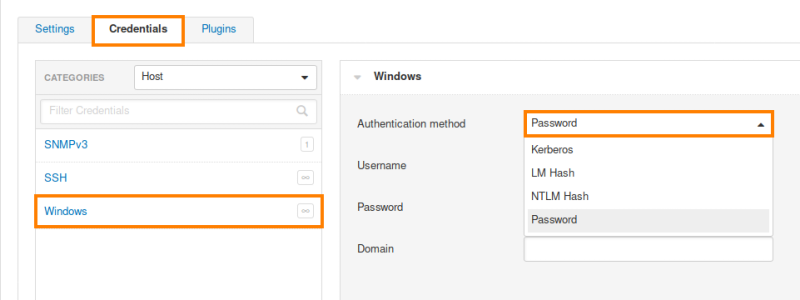

Credentials
• Most penetration testers and ethical hackers do not use these options, instead relying on Nessus scans for vulnerabilities that can be measured without any user credentials at all.
• Some pen testers and some auditors do use these options, however, to gain more in-depth insight into security vulnerabilities of target machines that can be measured only using valid authentication credentials, especially for internal network scanning